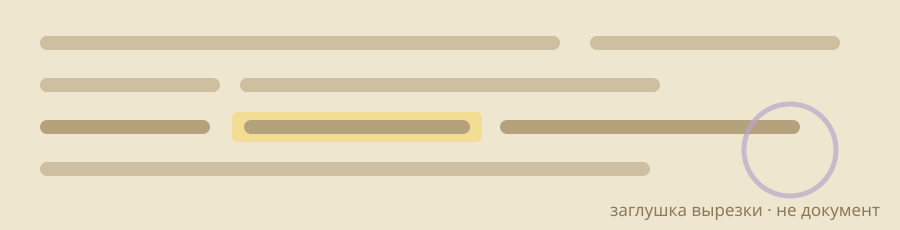

Готлиб, он же Богдан

В Лебяжьем никто не умел выговорить имя Готлиб. Учётчик в конторе писал его и так, и эдак, а потом махнул рукой и записал отца Эммы Богданом. Так у одного человека стало два имени: дома, по-немецки, — Готлиб, на бумаге, по-русски, — Богдан.
На полях · откуда это
Имя Богдан стоит в паспорте Эммы — это помнит внучка. Как писал учётчик, никто не видел: так обычно бывало в конторах спецпоселений.
Учётчик, сам того не зная, почти не ошибся. Gottlieb по-немецки — «любящий Бога», а Богдан — «Богом данный». Слова разные, а говорят об одном: о ребёнке, за которого родители благодарили небо. Поэтому у Эммы в паспорте отчество Богдановна, а в справке, которую она получила уже бабушкой, стоит другое.

Шмидт Эмма Готлибовна, 1931 г. р., уроженка с. Гнаденфлюр…
На полях · два отчества
Готлибовна — в справке 1994 года, Богдановна — в паспорте. Это не ошибка писаря, а след двух языков одной семьи.
Зимой 1942 года Готлиба забрали в трудармию — так называли лагеря, где работали немецкие мужчины. Эмме было одиннадцать. Отец уехал из Лебяжьего, и больше семья его не видела. Где он работал и где лежит, пока не знает никто. От него остались два имени, и оба — его.
На полях · что ищем
Трудармия — по памяти семьи. Места и даты пока не найдены; Фамильяр ищет в списках 1942 года.
Эмма прожила долгую жизнь и всегда подписывалась Богдановной. Через много лет внучка Ирина, разбирая бабушкины бумаги, заметила в справке другое отчество. С этой строчки и началось расследование.
 Дальше · глава 4 · 1957Дочь из ПавлодараЭмма выходит замуж, и у неё рождается Людмила
Дальше · глава 4 · 1957Дочь из ПавлодараЭмма выходит замуж, и у неё рождается Людмила